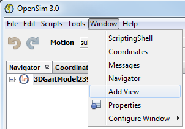
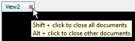
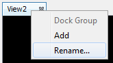
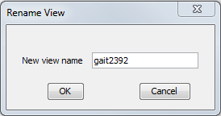

You can have as many 3D Views as needed in order to examine your models from various angles. Specific uses of the 3D View windows include:
- Visualization of objects associated with models, for example, forces and moments applied to a model
- Visualization of motions that are pre-recorded or which result from an analysis
- A visual check of the validity of the model, for example, the correctness of muscle wrapping which requires visual inspection in different configurations
The topics on this page include:
Creating 3D Views
You do not have to explicitly create 3D Views. A new 3D View window opens automatically when the first model is loaded into OpenSim. Subsequent models are displayed in the same 3D View window. An offset is computed by OpenSim based on the dimensions of the loaded models to place the new model in the 3D View so that it does not overlap with previously loaded models. You can control this offset using the Display → Model Offset… option, accessed from the node in the Navigator window that represents the model visit Object-Specific Commands for more information.
To explicitly open a new 3D View window (without loading a model):
|  |
|
|---|
If you have a 3D View window already open, you can also create a new 3D View window:
 |
|
|---|
If another 3D View window is already open, the newly created window will be a tabbed window overlaid on the previously open 3D View window. You can drag these windows apart as needed. If the new window was created from an existing 3D View window, the camera in the new window will be in the same position as in the original window. OpenSim will not create a new 3D View if you close the 3D View window that was automatically created when the first model was loaded. |
The figure below shows a 3D view window with a loaded model:
 |
|---|
Opening Multiple 3D Views
You can open many 3D View windows simultaneously to obtain multiple views. Multiple views can come in handy if a user wants to see a model from multiple angles at the same time. This can be useful, for example, when running a gait simulation or when moving a muscle attachment point in order to place it accurately on a bony landmark.
Detach & Dock 3D Views
You can detach the 3D View windows from the application for easier viewing purposes. To do so just drag the view tab outside of the application, and a new window with just the 3D View will appear. You can also achieve this by clicking Window - Configure Windows - Float. To dock the window back to application main frame, you can either drag the window back to the application, click Window - Configure Windows - Dock or use the keyboard shortcut Ctrl + Alt + D.
Closing 3D Views
|  |
|
|---|
Naming 3D Views
OpenSim creates 3D View windows with default names that start with the prefix "view" followed by a number (e.g., view0, view1).
You can change the names to more meaningful names:
|  |
| ||
|---|---|---|---|
|  | 3. Enter the new name in this dialog box then click OK.
|
{kind=link}
{kind=link}
{kind=link}
{kind=link}